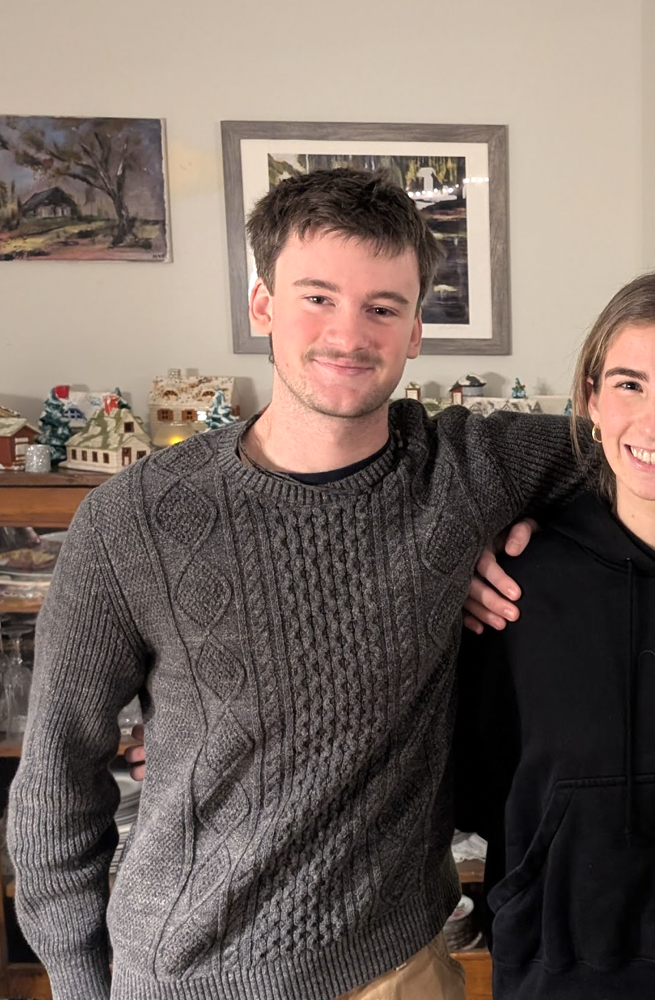

06


Hello! I'm Quinn, a CS student at Tulane University. I enjoy building things, solving hard problems, and picking up new skills fast. Based in Martha's Vineyard, currently in New Orleans.
Get in touchI'm a Computer Science student at Tulane University, passionate about writing code, solving problems, and building software.
I grew up in Evanston and Martha's Vineyard, and I'm currently studying at Tulane University in New Orleans.
Alongside CS, I've been studying business and management. I'm interested in the intersection of technology and business.
I'm always open to internship or job opportunities, interesting projects, or just a good conversation. Feel free to reach out. Here you can find my email, GitHub, and LinkedIn.
